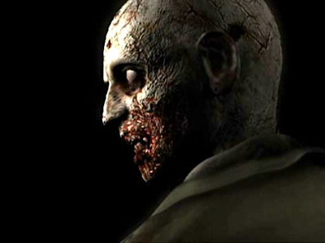
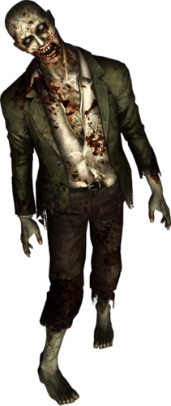

Zombie

วันที่สร้าง : 1998
เกิดโดย : การติดเชื้อT-Virus
สร้างจาก : มนุษย์
จุดประสงค์ : ทดลอง/อุบัติเหตุ
สถานะ : สูญพันธุ์
Zombie คือ คนที่เสียชีวิตจาก T-Virus ซึ่งติดเชื้อผ่านทางน้ำและการกัดหรือข่วน ซอมบี้จะแพร่ไวรัสด้วยการกัด
ลักษณะอาการและการติดเชื้อ
- ระยะฟักตัวของเชื้อมีหลายปัจจัยซึ่งขึ้นอยู่กับตัวโฮสต์หรืออาจจะขึ้นอยู่กับความแข็งแรงของระบบภูมิคุ้มกัน โดยส่วนใหญ่มนุษย์จะกลายเป็นซอมบี้เมื่อสัมผัสกับไวรัสครั้งแรกซึ่งอาจจะต้องใช้เวลาเป็นชั่วโมง
- อาการเด่นที่สุดก่อนกลายพันธุ์คืออาการคัน บางทีก็คลื่นไส้และบางกรณีก็ถึงกับบ้าหรือสูญเสียความคิดด้วย นานๆเข้าไวรัสจะออกฤทธิ์อย่างเต็มที่ เช่น อยากอาหารอย่างรุนแรงและมีท่าทีไม่เป็นมิตร อาการเหล่านี้มักเกิดกับผู้ที่ติดเชื้อผ่านทางน้ำ ส่วนเหล่าผู้ติดเชื้อที่ได้รับเชื้อจากพาหะ จะเกิดอาการเหนื่อยและหลับไป การติดเชื้อรูปแบบนี้จะไม่แสดงอาการใดๆจนกว่าเขาจะตายในที่สุด T-Virusสามารถทำให้เนื้อเยื่อที่ตายแล้วกลับคืนสภาพซึ่งก็ได้เห็นจากศพที่กลับมาเดินได้

ลักษณะทั่วไป
- ซอมบี้มีชีวิตที่ยาวนาน อึดทนทาน และน่ากลัว ซอมบี้สูญเสียความคิดเชิงเหตุผลและถูกควบคุมด้วยสัญชาตญาณโดยสิ้นเชิงซึ่งนั่นเป็นสาเหตุที่มันกินทุกอย่างที่ขวางหน้า ขณะที่มันกินเนื้อมนุษย์เป็นอาหาร มันก็ไม่ได้แสดงสัญชาตญาณเอาตัวรอดเหมือนสิ่งมีชีวิตทั่วไป และเป็นไปได้ว่าซอมบี้บริโภคเนื้อมนุษย์เพื่อซ่อมแซมร่างกาย สารอาหารจากเหยื่อจะช่วยรักษาร่างกายของมันและเพื่อช่วยในการสร้างเนื้อเยื่อใหม่ ในการซ่อมแซมร่างกายนี้ก็ได้ทำให้สมองทำงานอีกครั้ง
- ซอมบี้จะไล่ตามเป้าหมายจนกว่าจะถูกยิงที่หัว ทำลายสมองโดยสมบูรณ์และเผาร่าง มันไม่มีความรู้สึกเจ็บปวด สามารถทนต่อกระสุนปืนพกได้หลายนัดก่อนที่จะล้มลง
- เนื่องจากเซลล์ทั่วร่างกายได้ตายลงและระบบประสาทเสื่อมโทรม ซอมบี้จึงเดินได้ช้าและงุ่มง่าม
- แต่ก็มี Hyper Zombie ซึ่งสามารถวิ่งเข้าไปโจมตีเหยื่ออย่างรวดเร็วและทนต่ออาวุธ ซอมบี้ยังคงไล่ล่าเหยื่อต่อไปแม้ว่าสูญเสียแขนขาหรือท่อนร่างของมันเอง
ลักษณะการติดเชื้อ
- เนื่องจากแทบทุกคนสามารถเป็นซอมบี้ พวกเขาสามารถติดเชื้อหลากหลายแบบขึ้นอยู่กับตำแหน่งการระบาดและไวรัส ขอบเขตผู้ติดเชื้อมีพลเรือนสามัญ ตำรวจจนไปถึงคนงานจำนวนมากและนักวิจัยที่ทดลองไวรัส ซอมบี้บางตัวก็อยู่ในศูนย์วิจัยเพราะเป็นผลจากการทดลอง
- ความสามารถของซอมบี้ที่แตกต่างกันไปอันมีปัจจัยสำคัญอยู่ที่พาหะ ซอมบี้ที่หยุดอยู่นิ่งเป็นเวลานานก็จะกลายพันธุ์เป็นคริมสัน เฮดด้วยกระบวนการ V-ACT ส่วนการติดเชื้อทางอ้อมก็จะทำให้ซอมบี้กลายพันธุ์เป็น Licker
รูปแบบการโจมตี
ซอมบี้ไม่ได้ทำได้แค่เดินไปรอบๆแล้วกัดถึงแม้ว่าจะมีข้อจำกัดด้านความคิด ในสามารถวางแผนการโจมตีได้ซึ่งก็พบกันบ่อยๆกับการแกล้งตาย
- กัด: การกัดถือเป็นท่าเอกลักษณ์ของซอมบี้ เมื่อเข้าใกล้เหยื่อมันจะดิ่งตรงเข้ามาฉีกเนื้อด้วยฟันของมันและสามารถแพร่เชื้อผ่านทางน้ำลายได้
- ข่วน: ซอมบี้จะใช้เล็บอันคมกริบชำแหละผิวหนังเป็นแผ่นๆ ด้วยวิธีนี้สามารถทำให้เหยื่อบาดเจ็บก่อนที่จะกิน
- พ่นกรด: ซอมบี้บางตัวมักจะชอบอาเจียนแต่การอาเจียนบางครั้งก็คือการโจมตีศัตรู อ้วกสามารถทำให้บาดเจ็บเนื่องจาสภาพที่เป็นกรด
- แกล้งตาย: ซอมบี้บางตัวอาจจะนอนกับพื้นในสภาพไม่เคลื่อนไหว เมื่อเหยื่อเข้ามาใกล้มันจะโจมตีด้วยการเกาะขาแล้วกัด มันจะแตกต่างจากซอมบี้ที่ตายแล้ว ซอมบี้ที่ตายแล้วจะมีกองเลือดอยู่